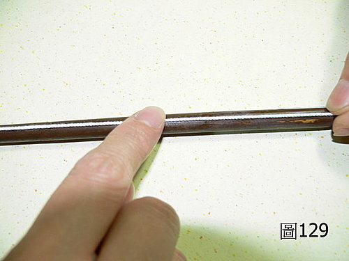

脈理醫理學 33.1.2：浮脈（三）‥‥‥脈法運用‥‥如何判斷風寒入裡化熱與風熱入裡化熱的不同
作者：陳建元
「風寒入裡化熱」與「風熱入裡化熱」的外表表現症狀類似，因為兩者都化熱了，所以單純從咳嗽的嚴重程度劇烈不劇烈，痰黃痰白，惡寒不惡寒，舌紅舌白‥‥‥這些常用的判斷指標，容易混淆分不清楚，但脈象上因為基模數夠大，區分是容易的。
一樣是望聞問診發現有上呼吸道感染，或是上述那些常用的中醫判斷指標，脈理醫理學 33.1.1 條有提到風寒入裡化熱的治法和判斷法，如果是肺脈浮位只有發現有那條白線，然後是要壓到脾位，才會發現有如筆管的滑大脈鼓指，病機則是外有風寒，入裡化熱而變成兼有裡熱。治用麻黃＋石膏，即《傷寒論》中麻杏石甘湯的組方原意。
風熱入裡化熱則是：如果是肺脈浮位已發現有如筆管（圖中是毛筆管）的滑大脈鼓指，壓到脾位也是有如筆管的滑大脈鼓指，則病機則是外有風熱，入裡化熱而變成兼有裡熱。治用金銀花、連翹之類＋石膏（量要大些）。〈圖129〉。

或問：
陳老師你好，這裡學生想要提出一個問題，老師有點明了化熱的關鍵，這裡想要問的是：若是病人本來就有裡熱，那病人外感化熱了，會不會有所不同，感覺素有裡熱 ，可能只是結果讓病人的風寒或是風熱化熱得更嚴重，這樣會不會讓黏脈的出線機率大增呢？？？
答：
感覺素有裡熱，可能只是結果讓病人的風寒或是風熱化熱得更嚴重→→→正確。
這樣會不會讓黏脈的出線機率大增呢→→→依長久的觀察結果，機率不高。如果是自體感冒，大抵只是熱，帶毒的機率較少，用石膏清掉即可。如果是傳染性感冒，帶毒的機率會大許多。熱、毒二字，雖然疾病發展到某個程度之後，二字會互相轉換融合，但在起初的病機上，還是要分開看。
【引用請先來信告知徵求同意，若有涉及販售營利等商業行為，版權所有拷貝盜用必究。】
【藥王脈學講壇】http://blog.xuite.net/drjychen/twblog